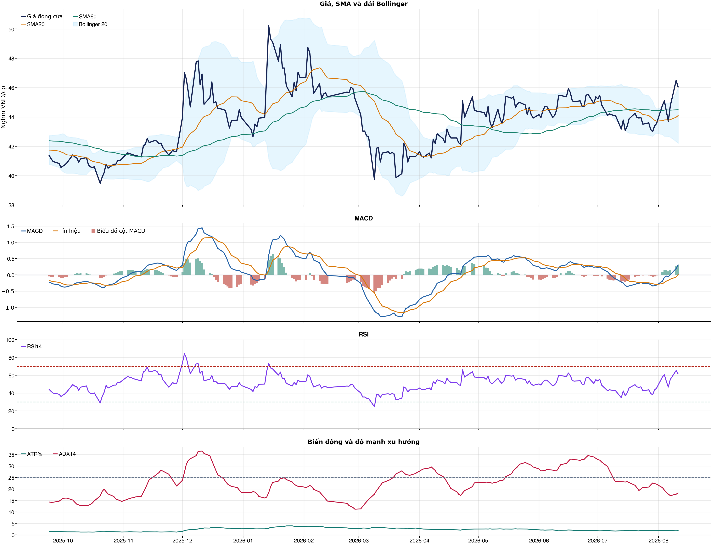
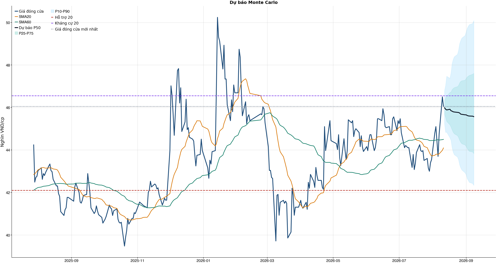
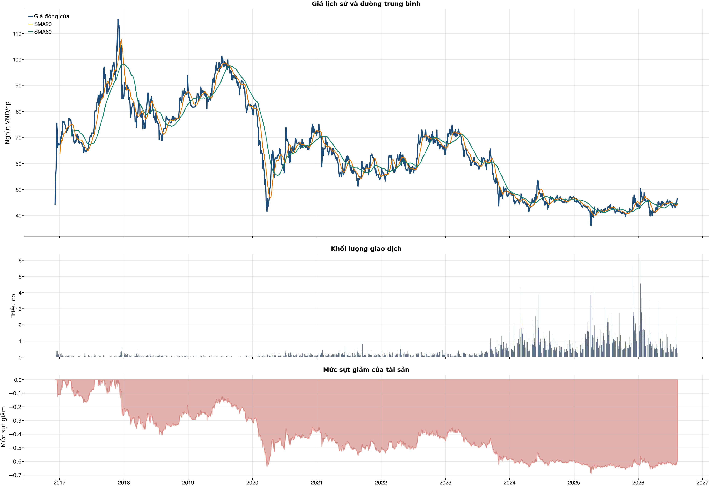

Kết quả chính
Tổng quan cơ bản
Biểu đồ kỹ thuật

Tín hiệu kỹ thuật
| Xu hướng | Trung tính | Giá trên SMA60 nhưng chưa vượt SMA20. |
| MACD | Tích cực | MACD trên signal, histogram dương. |
| RSI14 | Tích cực | RSI 61.5. |
| Bollinger | Gần biên trên | Giá sát/vượt biên trên. |
| ADX | Đi ngang | ADX 18.3. |
| Thanh khoản | Thấp | 0.35 lần trung bình. |
| Stochastic | Yếu lại | %K nằm dưới %D. |
So sánh mô hình
| XGBoost | 0.513 | AUC 0.510 |
| Logistic | 0.499 | AUC 0.469 |
| Đa số | 0.500 | Mốc so sánh |
Kiểm thử chiến lược ngoài mẫu sau chi phí
| Lợi nhuận ròng | -32.9% | 717 quan sát ngoài mẫu |
| Sharpe | -1.24 | Sau chi phí |
| Mức sụt giảm tối đa | -34.7% | 65 vòng giao dịch |
| Chi phí giả định | 50.0 bps | Một vòng mua và bán |
Mức độ quan trọng của đặc trưng
| stoch_k_14 | 13.59 | Mức đóng góp |
| market_return_20d | 12.02 | Mức đóng góp |
| macd_pct | 11.04 | Mức đóng góp |
| rsi_14 | 10.87 | Mức đóng góp |
| return_1d | 10.31 | Mức đóng góp |
| adx_14 | 10.26 | Mức đóng góp |
| close_vs_sma60 | 10.24 | Mức đóng góp |
| market_return_5d | 10.13 | Mức đóng góp |
Điều kiện phát hành tín hiệu
| AUC của mô hình | KHÔNG ĐẠT | Điều kiện phát hành tín hiệu |
| Độ chính xác cân bằng của mô hình | KHÔNG ĐẠT | Điều kiện phát hành tín hiệu |
| XGBoost vượt mô hình Logistic đối chứng | ĐẠT | Điều kiện phát hành tín hiệu |
| Xác suất tăng đạt ngưỡng | ĐẠT | Điều kiện phát hành tín hiệu |
| Bối cảnh kỹ thuật đạt ngưỡng | KHÔNG ĐẠT | Điều kiện phát hành tín hiệu |
| Tỷ lệ lợi nhuận/rủi ro đạt ngưỡng | ĐẠT | Điều kiện phát hành tín hiệu |
| Dữ liệu còn mới | ĐẠT | Điều kiện phát hành tín hiệu |
| Có khối lượng vị thế hợp lệ | ĐẠT | Điều kiện phát hành tín hiệu |
| Có kết quả kiểm thử chiến lược ngoài mẫu | ĐẠT | Điều kiện phát hành tín hiệu |
| Mẫu kiểm thử chiến lược đủ lớn | ĐẠT | Điều kiện phát hành tín hiệu |
| Kiểm thử chiến lược có lợi thế ròng | KHÔNG ĐẠT | Điều kiện phát hành tín hiệu |
Quản trị rủi ro
| Rủi ro/lệnh | 1.0% | 1,000,000 VND |
| Mức dừng lỗ | 44.67 | Rủi ro mỗi cổ phiếu 1.60 |
| Mục tiêu 1 | 50.08 | Lợi nhuận/rủi ro 2.37 |
| Mục tiêu 2 | 50.08 | Dự báo/kháng cự |
Phân tích cơ bản
| P/E | 12.49 | 2026-Q2 |
| P/B | 3.05 | 2026-Q2 |
| P/S | 2.24 | 2026-Q2 |
| ROE | 22.3% | 2026-Q2 |
| ROA | 15.1% | 2026-Q2 |
| Gross margin | 37.8% | 2026-Q2 |
| Net margin | 18.8% | 2026-Q2 |
| Debt/Equity | 0.48 | 2026-Q2 |
| Current ratio | 2.46 | 2026-Q2 |
| NPL | 0.0% | 2026-Q2 |
| Dividend yield | 0.0% | 2026-Q2 |
| Market cap | 59,639.2 tỷ | 2026-Q2 |
| Revenue Growth | 1.2% | 2026-Q2 YoY |
| Profit Growth | -3.4% | 2026-Q2 YoY |
| Dòng tiền từ HĐKD | 524.4 tỷ | 2026-Q2 |
| CAPEX | -113.2 tỷ | 2026-Q2 |
| Lợi nhuận sau thuế | 1,243.3 tỷ | 2026-Q2 |
| Lợi nhuận hoạt động | 1,534.5 tỷ | 2026-Q2 |
| Chi phí lãi vay | -6.9 tỷ | 2026-Q2 |
| Tiền và tương đương tiền | 3,643.1 tỷ | 2026-Q2 |
| Vay ngắn hạn | 200.1 tỷ | 2026-Q2 |
| Vay dài hạn | 167.1 tỷ | 2026-Q2 |
| Tổng tài sản | 31,722.0 tỷ | 2026-Q2 |
| Tổng nợ phải trả | 10,267.2 tỷ | 2026-Q2 |
| Vốn chủ sở hữu | 21,454.8 tỷ | 2026-Q2 |
| Khoản phải thu | 734.7 tỷ | 2026-Q2 |
| Hàng tồn kho | 1,900.4 tỷ | 2026-Q2 |
| Dòng tiền tự do (CFO - CAPEX) | 411.1 tỷ | 2026-Q2 |
| CFO / Lợi nhuận sau thuế | 0.42 | 2026-Q2 |
| Nợ vay ròng | -3,275.9 tỷ | 2026-Q2 |
| Nợ vay / Vốn chủ sở hữu | 0.02 | 2026-Q2 |
| Phải thu / Tổng tài sản | 2.3% | 2026-Q2 |
| Khả năng trả lãi (EBIT / lãi vay) | 223.37 | 2026-Q2 |
Tin tức doanh nghiệp
| Trạng thái | Có dữ liệu | research_only |
| Nguồn / số bài | VCI | 50 |
| Bài đủ timestamp | 50 | Chỉ các bài này mới được phép dùng point-in-time |
| Sentiment 5 ngày | 0.00 | 0.0 bài trước cutoff |
| Phương pháp | keyword_heuristic_v1 | Research only; chưa dùng làm tín hiệu mua/bán |
Dự báo ngắn hạn
| 2026-08-12 | 45.99 | P10 45.24 / P90 46.79 |
| 2026-08-13 | 45.92 | P10 44.83 / P90 47.04 |
| 2026-08-14 | 45.89 | P10 44.84 / P90 47.46 |
| 2026-08-17 | 45.92 | P10 44.58 / P90 47.37 |
| 2026-08-18 | 45.85 | P10 44.45 / P90 47.62 |
| 2026-08-19 | 45.83 | P10 44.11 / P90 48.06 |
| 2026-08-20 | 45.80 | P10 43.91 / P90 48.25 |
| 2026-08-21 | 45.79 | P10 43.78 / P90 48.38 |
Biểu đồ dự báo

Lịch sử giá và mức sụt giảm

Báo cáo dùng để học tập và lập kịch bản, không phải khuyến nghị mua/bán.
Phân tích AI có kiểm chứng
Trạng thái quyết định: NO_EDGE
Tóm tắt: ML decision hiện giữ nguyên NO_EDGE. News Reader đã trích đoạn có nguồn của 4 bài để phân loại chủ đề (ket_qua_kinh_doanh: 4, co_tuc_va_hanh_dong_doanh_nghiep: 2, vi_mo: 3, nganh: 4, rui_ro: 2), nhưng các trích đoạn này không tạo bằng chứng mới cho quyết định đầu tư.
Kỹ thuật: Artifact kỹ thuật: bias Trung tính; điểm 1. Chi tiết artifact: Xu hướng: Trung tính (Giá trên SMA60 nhưng chưa vượt SMA20.); MACD: Tích cực (MACD trên signal, histogram dương.); RSI14: Tích cực (RSI 61.5.); Bollinger: Gần biên trên (Giá sát/vượt biên trên.); ADX: Đi ngang (ADX 18.3.); Thanh khoản: Thấp (0.35 lần trung bình.); Stochastic: Yếu lại (%K nằm dưới %D.)
Cơ bản: Artifact cơ bản: SABECO; kỳ 2026-Q2; P/E 12.49; P/B 3.05; ROE 22.3%; ROA 15.1%; Debt/Equity 0.48; Revenue Growth 1.2%; Profit Growth -3.4%.
Tin tức: Đã đọc trích đoạn giới hạn của 4 bài; phân nhóm rule-based: ket_qua_kinh_doanh: 4, co_tuc_va_hanh_dong_doanh_nghiep: 2, vi_mo: 3, nganh: 4, rui_ro: 2. Tác động cần kiểm chứng: Đối chiếu doanh thu/lợi nhuận trong bài với BCTC và kỳ vọng thị trường. Kiểm tra ngày GDKHQ, tỷ lệ, nguồn chi trả và nguy cơ pha loãng trước khi đánh giá tác động. Đối chiếu thời điểm công bố và kênh tác động lãi suất/tỷ giá với mô hình kinh doanh. So sánh tín hiệu ngành với thị phần, nhu cầu và đối thủ trước khi suy luận cho riêng doanh nghiệp. Xác minh công bố chính thức, phạm vi ảnh hưởng và khả năng định lượng rủi ro. Đây không phải sentiment hay dự báo tác động giá.
Live research: Live snapshot lấy lúc 2026-08-11T05:10:22.782036+00:00; News Reader đọc được 4 bài. ML có 4 lý do guard và vẫn là NO_EDGE. Không dùng tin live để train/backtest.
Rủi ro cần kiểm chứng
- ML guard: AUC 0.510 < 0.540
- ML guard: Balanced accuracy 0.513 < 0.520
- ML guard: Technical score 1 < 2
- ML guard: Lợi thế OOS ròng không đạt: return=-0.32891206999999945, Sharpe=-1.2399010621517204
- News Reader: Đối chiếu doanh thu/lợi nhuận trong bài với BCTC và kỳ vọng thị trường.
- News Reader: Kiểm tra ngày GDKHQ, tỷ lệ, nguồn chi trả và nguy cơ pha loãng trước khi đánh giá tác động.
- News Reader: Đối chiếu thời điểm công bố và kênh tác động lãi suất/tỷ giá với mô hình kinh doanh.
- News Reader: So sánh tín hiệu ngành với thị phần, nhu cầu và đối thủ trước khi suy luận cho riêng doanh nghiệp.
- News Reader: Xác minh công bố chính thức, phạm vi ảnh hưởng và khả năng định lượng rủi ro.
- Chỉ lưu trích đoạn giới hạn để kiểm chứng nguồn; không lưu hay hiển thị toàn văn bài báo.
- Phân nhóm là keyword rule-based để định tuyến research, không phải sentiment hay dự báo tác động giá.
- Dữ liệu News Reader chỉ phục vụ research/report; không dùng làm feature train/backtest khi chưa có lịch sử available_at point-in-time.
- Tin live/trích đoạn cần mở URL gốc để kiểm chứng bối cảnh, số liệu và thời điểm trước khi sử dụng.
Bằng chứng
- ML decision artifact: NO_EDGE. AUC 0.510 < 0.540
- ML decision artifact: NO_EDGE. Balanced accuracy 0.513 < 0.520
- ML decision artifact: NO_EDGE. Technical score 1 < 2
- ML decision artifact: NO_EDGE. Lợi thế OOS ròng không đạt: return=-0.32891206999999945, Sharpe=-1.2399010621517204
- News Reader [thuonghieucongluan.com.vn]: Cổ phiếu đáng chú ý ngày 7/8: FPT, GMD, SAB - thuonghieucongluan.com.vn | nhóm: ket_qua_kinh_doanh, vi_mo, nganh, rui_ro (2026-08-06T23:23:00+00:00)
- News Reader [Vietnam.vn]: DSC khuyến nghị theo dõi cổ phiếu SAB - Vietnam.vn | nhóm: ket_qua_kinh_doanh, nganh (2026-08-07T01:56:20+00:00)
- News Reader [Tin nhanh chứng khoán]: Cổ phiếu cần quan tâm ngày 7/8 - Tin nhanh chứng khoán | nhóm: ket_qua_kinh_doanh, co_tuc_va_hanh_dong_doanh_nghiep, vi_mo, nganh, rui_ro (2026-08-06T10:30:00+00:00)
- News Reader [index.vn]: Phân tích cổ phiếu SAB: Tổng CTCP Bia - Rượu - Nước giải khát Sài Gòn - index.vn | nhóm: ket_qua_kinh_doanh, co_tuc_va_hanh_dong_doanh_nghiep, vi_mo, nganh (2026-08-06T09:23:00+00:00)
Báo cáo chỉ tổng hợp artifact đã lưu để nghiên cứu; không phải khuyến nghị mua/bán. Quyết định và vị thế vẫn bị khóa theo signal_decision.json.
Tin web đã lấy
| Nguồn | Tiêu đề | Thời điểm | Link |
|---|---|---|---|
| thuonghieucongluan.com.vn | Cổ phiếu đáng chú ý ngày 7/8: FPT, GMD, SAB - thuonghieucongluan.com.vn | 2026-08-06T23:23:00+00:00 | Mở nguồn |
| Vietnam.vn | DSC khuyến nghị theo dõi cổ phiếu SAB - Vietnam.vn | 2026-08-07T01:56:20+00:00 | Mở nguồn |
| Tin nhanh chứng khoán | Cổ phiếu cần quan tâm ngày 7/8 - Tin nhanh chứng khoán | 2026-08-06T10:30:00+00:00 | Mở nguồn |
| index.vn | Phân tích cổ phiếu SAB: Tổng CTCP Bia - Rượu - Nước giải khát Sài Gòn - index.vn | 2026-08-06T09:23:00+00:00 | Mở nguồn |
News Reader: bài đã đọc và trích đoạn
| Nguồn | Tiêu đề | Nhóm | Thời điểm | Trích đoạn đã đọc | Link |
|---|---|---|---|---|---|
| thuonghieucongluan.com.vn | Cổ phiếu đáng chú ý ngày 7/8: FPT, GMD, SAB - thuonghieucongluan.com.vn | ket_qua_kinh_doanh, vi_mo, nganh, rui_ro | 2026-08-06T23:23:00+00:00 | Xem trích đoạnCỡ chữ A − Cỡ chữ nhỏ A Cỡ chữ vừa A + Cỡ chữ lớn 06:23 07/08/2026 Thương hiệu Tài chính - Chứng khoán FPT: Động lực tăng trưởng đến từ làn sóng chuyển đổi AI CTCK Bảo Việt (BVSC) tiếp tục duy trì khuyến nghị OUTPERFORM đối với cổ phiếu FPT, đồng thời đưa ra giá mục tiêu 87.700 đồng/cổ phiếu, thấp hơn khoảng 7% so với báo cáo trước do điều chỉnh suất chiết khấu trong bối cảnh mặt bằng lãi suất và chi phí cơ hội gia tăng. Theo BVSC, việc điều chỉnh giá mục tiêu không làm thay đổi triển vọng dài hạn của doanh nghiệp. Điểm nhấn vẫn nằm ở mảng dịch vụ công nghệ, đặc biệt là quá trình chuyển dịch từ chuyển đổi số sang chuyển đổi AI (AI Transformation - AIX). Công ty chứng khoán cho rằng nếu FPT tiếp tục chứng minh được khả năng cung cấp các giải pháp AI có tính ứng dụng cao, giúp khách hàng tối ưu chi phí và nâng cao năng suất, doanh nghiệp sẽ bước vào chu kỳ tăng trưởng mới với giá trị hợp đồng lớn hơn. Trong thời gian tới, BVSC sẽ tiếp tục theo dõi các chỉ tiêu như tốc độ tăng đơn hàng ký mới, doanh thu từ chuyển đổi số và AI, năng suất lao động cũng như biên lợi nhuận để đánh giá khả năng duy trì đà tăng trưởng của FPT. GMD: Câu chuyện tăng trưởng không chỉ đến từ kết quả kinh doanh CTCK Yuanta giữ quan điểm khả quan đối với cổ phiếu Gemadept (GMD) sau khi doanh nghiệp công bố kết quả kinh doanh quý II tích cực. Doanh thu quý II đạt 1.763 tỷ đồng, tăng 18% so với cùng kỳ, trong khi lợi nhuận sau thuế thuộc cổ đông công ty mẹ tăng mạnh lên 1.133 tỷ đồng. Bên cạnh khoản lợi nhuận bất thường từ thương vụ thoái vốn tại CJ Gemadept, hoạt động kinh doanh cốt lõi cũng ghi nhận mức tăng trưởng tích cực. Theo Yuanta, cảng Gemalink tiếp tục là tài sản quan trọng nhất của Gemadept. Sản lượng container thông qua cảng tăng mạnh và công suất hiện đã vượt thiết kế, tạo cơ sở để doanh nghiệp đẩy nhanh triển khai Gemalink giai đoạn 2, dự kiến đưa vào khai thác từ quý IV/2027. Ngoài ra, kế hoạch chuyển nhượng 24% cổ phần tại Gemalink cho đối tác quốc tế cùng phương án thoái vốn dự án cao su tại Campuchia được kỳ vọng sẽ mang lại nguồn lợi nhuận đáng kể trong giai đoạn 2026-2027. Yuanta đánh giá GMD vẫn đang được giao dịch quanh mức P/B trung bình 5 năm, trong khi doanh nghiệp còn nhiều dư địa tăng trưởng nhờ mở rộng công suất khai thác cảng và tái cơ cấu danh mục đầu tư. SAB: Kết quả kinh doanh cải thiện nhưng vẫn cần theo dõi Đối với Sabeco (SAB), CTCK DSC lựa chọn quan điểm | Mở nguồn |
| Vietnam.vn | DSC khuyến nghị theo dõi cổ phiếu SAB - Vietnam.vn | ket_qua_kinh_doanh, nganh | 2026-08-07T01:56:20+00:00 | Xem trích đoạnSKĐS - Chứng khoán DSC đưa cổ phiếu SAB vào danh mục theo dõi dựa trên dữ liệu kinh doanh và xu hướng vận động giai đoạn nửa cuối 2026. Theo đánh giá của DSC, lũy kế 6 tháng đầu năm 2026, doanh thu thuần và lợi nhuận sau thuế của Tổng Công ty Cổ phần Bia - Rượu - Nước Giải khát Sài Gòn (SAB – sàn HOSE) lần lượt đạt 13.345 tỷ đồng (tăng 6% so với cùng kỳ) và 2.352 tỷ đồng (tăng 18%). Với kết quả vừa nêu, SAB lần lượt hoàn thành 46% mục tiêu doanh thu và 50% kế hoạch lợi nhuận sau thuế cho năm 2026. Trước các rủi ro gia tăng từ việc điều chỉnh thuế Tiêu thụ đặc biệt – có thể làm suy giảm nhu cầu tiêu thụ cùng với áp lực từ giá nguyên vật liệu đầu vào tăng, DSC đưa ra khuyến nghị theo dõi đối với cổ phiếu SAB, với mức giá mục tiêu là 48.500 đồng. DSC sử dụng phương pháp định giá P/E với mức giá dự phóng là 48.500 đồng/CP, tương ứng với P/E forward là 12,1 lần. DSC khẳng định, tốc độ tăng trưởng của SAB khó có khả năng bứt phá mạnh mẽ, do doanh nghiệp đang đối mặt với rủi ro chính sách mang tính trọng yếu, bao gồm tác động kéo dài của Nghị định 100 và thuế tiêu thụ đặc biệt mới gây áp lực đến sức tiêu dùng ngành bia. Nguồn: https://suckhoedoisong.vn/dsc-khuyen-nghi-theo-doi-co-phieu-sab-169260807072513923.htm [Ảnh] Các đồng chí lãnh đạo Đảng, Nhà nước viếng đồng chí Saysomphone Phomvihane Đột phá hạ tầng giao thông, tạo đà phát triển du lịch Cà Mau Việt Nam - Thái Lan: Cuộc đua đang thay đổi vị thế Du khách tấp nập đến núi Bà Đen xem triển lãm gốm tâm linh lớn chưa từng có Ngoài Mũi Nghê, còn tuyến trekking sóng dữ trên bán đảo Sơn Trà cần tránh Ngàn hoa rừng về phố biển Quy Nhơn trong mùa lễ hội tháng 8 Bệnh viện đa khoa Hoài Đức khai trương Đơn nguyên Thận nhân tạo Cần sớm có Luật Dinh dưỡng học đường để bảo vệ sức khỏe thế hệ tương lai Valis Luxury - Hành trình khẳng định thương hiệu nha khoa quốc tế tại Việt Nam Nổ lốp xe, nam thanh niên vỡ cơ hoành, tổn thương nhiều đoạn ruột Thủng thực quản do nuốt cơm để chữa hóc xương Lịch thi đấu giải bóng chuyền nữ vô địch châu Á 2026 mới nhất Real Madrid mua Adam Wharton sau khi hụt Rodri iPhone 18 Pro chốt giá ra sao khi chi phí sản xuất tăng gần 40% Mâu thuẫn tại Atletico Madrid: Tiền lệ pháp lý có mở đường cho Julian Alvarez sang Barca? Julian Alvarez gặp bế tắc tại Atletico Madrid: Tiền lệ pháp lý mở đường gia nhập Barcelona Úc đón Tổng Bí thư, Chủ tịch nước Tô Lâm theo nghi thức cao nhất Trung vệ đội tuyển Việt | Mở nguồn |
| Tin nhanh chứng khoán | Cổ phiếu cần quan tâm ngày 7/8 - Tin nhanh chứng khoán | ket_qua_kinh_doanh, co_tuc_va_hanh_dong_doanh_nghiep, vi_mo, nganh, rui_ro | 2026-08-06T10:30:00+00:00 | Xem trích đoạnBVSC duy trì khuyến nghị OUTPERFORM đối với cổ phiếu của CTCP FPT (FPT – sàn HOSE) với giá mục tiêu 87.700 đồng/CP - có điều chỉnh giảm nhẹ 7% so với cập nhật lần trước do tăng suất chiết khấu, phản ánh môi trường lãi suất và chi phí cơ hội cao. Tuy vậy, quan điểm của chúng tôi vẫn giữ nguyên đối với tiềm năng của mảng chuyển đổi số, nay được nâng lên tầm cao mới là chuyển đổi AI (AIX), đứng trước một chu kỳ bùng nổ nếu như các nhà cung cấp dịch vụ chứng minh được sự hiệu quả và tính ứng dụng của AI để mang đến giải pháp toàn diện hơn, giá trị gia tăng cao hơn với năng suất và chi phí tối ưu hơn cho khách hàng. Do đó, tăng trưởng đơn hàng ký mới, tỷ trọng doanh thu chuyển đổi số - đặc biệt là doanh thu AI, năng suất lao động bình quân và biên lợi nhuận là những chỉ số quan trọng mà chúng tôi sẽ tiếp tục theo dõi sát sao trong thời gian tới. Lũy kế 6 tháng đầu năm 2026, doanh thu thuần và lợi nhuận sau thuế của Tổng Công ty Cổ phần Bia - Rượu - Nước Giải khát Sài Gòn (SAB – sàn HOSE) lần lượt đạt 13.345 tỷ đồng (tăng 6% so với cùng kỳ) và 2.352 tỷ đồng (tăng 18%). Với kết quả này, SAB lần lượt hoàn thành 46% mục tiêu doanh thu và 50% kế hoạch lợi nhuận sau thuế cho năm 2026. Trước các rủi ro gia tăng từ việc điều chỉnh thuế Tiêu thụ đặc biệt – có thể làm suy giảm nhu cầu tiêu thụ cùng với áp lực từ giá nguyên vật liệu đầu vào tăng, DSC đưa ra khuyến nghị theo dõi đối với cổ phiếu SAB, với mức giá mục tiêu là 48.500 đồng. Chúng tôi sử dụng phương pháp định giá P/E với mức giá dự phóng là 48.500 đồng/CP, tương ứng với P/E forward là 12,1 lần. DSC khẳng định rằng tốc độ tăng trưởng của SAB khó có khả năng bứt phá mạnh mẽ, do doanh nghiệp đang đối mặt với rủi ro chính sách mang tính trọng yếu, bao gồm tác động kéo dài của Nghị định 100 và thuế tiêu thụ đặc biệt mới gây áp lực đến sức tiêu dùng ngành bia. Doanh thu quý II/2026 của GMD đạt 1.763 tỷ đồng, tăng 18% so với cùng kỳ và tăng 21% so với quý trước. Lợi nhuận sau thuế của cổ đông công ty mẹ đạt 1.133 tỷ đồng, tăng mạnh 155% so với cùng kỳ và 112% so với quý trước. Tăng trưởng lợi nhuận đột biến chủ yếu đến từ khoản lợi nhuận một lần 487 tỷ đồng từ thoái 49,1% vốn tại CJ Gemadept cho CJ Logistic Hong Kong. Nếu loại trừ khoản thoái vốn, lợi nhuận cốt lõi đạt 646 tỷ đồng, tăng mạnh 55%. Động lực tăng trưởng cốt lõi tới từ lợi nhuận từ công ty liên kết đạt 382 tỷ đồng, tăng mạnh 58% so với cùng kỳ và 23% so | Mở nguồn |
| index.vn | Phân tích cổ phiếu SAB: Tổng CTCP Bia - Rượu - Nước giải khát Sài Gòn - index.vn | ket_qua_kinh_doanh, co_tuc_va_hanh_dong_doanh_nghiep, vi_mo, nganh | 2026-08-06T09:23:00+00:00 | Xem trích đoạnTổng Công ty Cổ phần Bia - Rượu - Nước giải khát Sài Gòn (Mã cổ phiếu : SAB - Sàn HOSE) là doanh nghiệp sản xuất và kinh doanh bia lâu đời, quy mô lớn nhất Việt Nam với các thương hiệu quốc dân như Bia Sài Gòn (Bia Saigon), 333. Sau khi tập đoàn ThaiBev (thông qua Vietnam Beverage) mua lại cổ phần chi phối, Sabeco đã trải qua quá trình tái cấu trúc toàn diện về quản trị, tối ưu hóa chuỗi cung ứng và hiện đại hóa hệ thống phân phối. Dù ngành tiêu dùng nhanh (FMCG) và đặc biệt là ngành đồ uống có cưng chịu nhiều sức ép từ bối cảnh kinh tế vĩ mô cũng như việc siết chặt quy định về nồng độ cưng (Nghị định 100), Sabeco vẫn chứng minh được "sức đề kháng" tài chính vượt trội. Bài phân tích cổ phiếu SAB dưới đây sẽ bóc tách toàn diện báo cáo tài chính 5 năm (2021 – 2025), sự bứt phá về biên lợi nhuận gộp và vị thế dòng tiền hùng hậu của "gã khổng lồ" ngành bia Việt Nam. Tổng quan doanh nghiệp: Vị thế dẫn đầu ngành bia và hệ sinh thái sản xuất quy mô lớn Sabeco sở hữu hệ thống 26 nhà máy bia hiện đại trải dài khắp cả nước, hàng chục công ty con và công ty liên kết cùng mạng lưới phân phối rộng khắp hơn 200.000 điểm bán lẻ. Thương hiệu di sản & Lợi thế quy mô: Thương hiệu "Bia Saigon" gắn liền với đời sống tiêu dùng người Việt qua nhiều thập kỷ, bao phủ đa dạng các phân khúc từ phổ thông (Saigon Lager, Saigon Export) đến cao cấp (Saigon Special, Saigon Chill). Tối ưu chuỗi cung ứng độc quyền: Mạng lưới nhà máy và kho vận đặt tại các vị trí chiến lược giúp Sabeco tối ưu hóa chi phí vận chuyển – yếu tố then chốt quyết định năng lực cạnh tranh trong ngành đồ uống đóng chai/lon. Sức mạnh tài chính và hỗ trợ từ ThaiBev: Sự tham gia của cổ đông chiến lược Thái Lan giúp Sabeco chuẩn hóa hệ thống quản trị chi phí, cải tiến bao bì và đàm phán mua nguyên liệu đầu vào (như hoa bia, lúa mạch, vỏ lon) với quy mô lớn. Phân tích kết quả kinh doanh: Lãi ròng bứt phá, biên lợi nhuận gộp chạm mốc kỷ lục 35,93% Bức tranh kết quả kinh doanh 5 năm (2021 – 2025) của Sabeco thể hiện sự chủ động linh hoạt của doanh nghiệp trước những biến động về sản lượng tiêu thụ toàn ngành. Doanh thu điều chỉnh - Tập trung tối ưu hóa giá trị Sau giai đoạn bùng nổ hậu đại dịch năm 2022 với doanh thu thuần kỷ lục 34.979,08 tỷ đồng, doanh thu của Sabeco hạ nhiệt về mức 25.888,19 tỷ đồng trong năm 2025. Sự sụt giảm về doanh thu phản ánh xu hướng chung của toàn ngành bia trước bối cảnh thắt chặt chi tiêu của | Mở nguồn |
Chi tiết báo cáo tài chính
Kết quả kinh doanh — 4 kỳ gần nhất
Hiển thị 35 dòng đầu; mở CSV đầy đủ.
| Khoản mục | 2026-Q2 | 2026-Q1 | 2025-Q4 | 2025-Q3 |
|---|---|---|---|---|
| Doanh thu bán hàng và cung cấp dịch vụ | 7,014.0 tỷ | 6,538.8 tỷ | 6,973.0 tỷ | 6,509.2 tỷ |
| Các khoản giảm trừ doanh thu | -126.0 tỷ | -81.6 tỷ | -136.4 tỷ | -72.6 tỷ |
| Doanh thu thuần | 6,888.0 tỷ | 6,457.2 tỷ | 6,836.6 tỷ | 6,436.6 tỷ |
| Giá vốn hàng bán | -4,224.8 tỷ | -4,052.1 tỷ | -4,242.5 tỷ | -4,050.2 tỷ |
| Lợi nhuận gộp | 2,663.2 tỷ | 2,405.1 tỷ | 2,594.1 tỷ | 2,386.3 tỷ |
| Doanh thu hoạt động tài chính | 261.8 tỷ | 264.4 tỷ | 256.7 tỷ | 251.6 tỷ |
| Chi phí tài chính | -10.0 tỷ | -14.4 tỷ | 1.8 tỷ | 78.2 tỷ |
| Chi phí lãi vay | -6.9 tỷ | -7.6 tỷ | -7.4 tỷ | -7.3 tỷ |
| Chi phí bán hàng | -1,154.2 tỷ | -900.3 tỷ | -1,325.8 tỷ | -981.3 tỷ |
| Chi phí quản lý doanh nghiệp | -255.6 tỷ | -236.1 tỷ | -263.7 tỷ | -233.3 tỷ |
| Lãi/(lỗ) từ hoạt động kinh doanh | 1,534.5 tỷ | 1,548.3 tỷ | 1,393.4 tỷ | 1,562.9 tỷ |
| Thu nhập khác | 6.7 tỷ | 7.5 tỷ | 7.0 tỷ | 139.4 tỷ |
| Chi phí khác | -4.3 tỷ | -8.0 tỷ | -28.0 tỷ | -6.5 tỷ |
| Thu nhập khác, ròng | 2.5 tỷ | -0.5 tỷ | -21.0 tỷ | 132.9 tỷ |
| Lãi/(lỗ) từ công ty liên doanh | 0.0 tỷ | 0.0 tỷ | 0.0 tỷ | 0.0 tỷ |
| Lãi/(lỗ) trước thuế | 1,536.9 tỷ | 1,547.9 tỷ | 1,372.5 tỷ | 1,695.8 tỷ |
| Thuế thu nhập doanh nghiệp - hiện thời | -315.3 tỷ | -265.7 tỷ | -317.6 tỷ | -306.7 tỷ |
| Thuế thu nhập doanh nghiệp - hoãn lại | 21.7 tỷ | -36.7 tỷ | 64.2 tỷ | 14.6 tỷ |
| Chi phí thuế thu nhập doanh nghiệp | -293.6 tỷ | -302.4 tỷ | -253.4 tỷ | -292.1 tỷ |
| Lãi/(lỗ) thuần sau thuế | 1,243.3 tỷ | 1,245.4 tỷ | 1,119.1 tỷ | 1,403.7 tỷ |
| Lợi ích của cổ đông thiểu số | 76.5 tỷ | 60.6 tỷ | 56.7 tỷ | 43.2 tỷ |
| Lợi nhuận của Cổ đông của Công ty mẹ | 1,166.8 tỷ | 1,184.8 tỷ | 1,062.4 tỷ | 1,360.5 tỷ |
| Lãi cơ bản trên cổ phiếu (VND) | 0.0 tỷ | 0.0 tỷ | 0.0 tỷ | 0.0 tỷ |
| Lãi trên cổ phiếu pha loãng (VND) | 0.0 tỷ | 0.0 tỷ | 0.0 tỷ | 0.0 tỷ |
| Lãi/(lỗ) từ công ty liên doanh (từ năm 2015) | 29.2 tỷ | 29.7 tỷ | 130.4 tỷ | 61.3 tỷ |
Bảng cân đối kế toán — 4 kỳ gần nhất
Hiển thị 35 dòng đầu; mở CSV đầy đủ.
| Khoản mục | 2026-Q2 | 2026-Q1 | 2025-Q4 | 2025-Q3 |
|---|---|---|---|---|
| TÀI SẢN NGẮN HẠN | 23,511.2 tỷ | 22,187.9 tỷ | 22,141.0 tỷ | 20,479.4 tỷ |
| Tiền và tương đương tiền | 3,643.1 tỷ | 3,698.9 tỷ | 4,016.9 tỷ | 2,910.5 tỷ |
| Tiền | 1,647.5 tỷ | 1,666.8 tỷ | 1,174.9 tỷ | 1,930.6 tỷ |
| Các khoản tương đương tiền | 1,995.6 tỷ | 2,032.0 tỷ | 2,842.0 tỷ | 979.8 tỷ |
| Đầu tư ngắn hạn | 17,085.9 tỷ | 15,749.9 tỷ | 14,985.5 tỷ | 14,772.1 tỷ |
| Đầu tư ngắn hạn | 0.0 tỷ | 0.0 tỷ | 0.0 tỷ | 0.0 tỷ |
| Dự phòng giảm giá | 0.0 tỷ | 0.0 tỷ | 0.0 tỷ | 0.0 tỷ |
| Các khoản phải thu | 734.7 tỷ | 495.7 tỷ | 902.8 tỷ | 875.5 tỷ |
| Phải thu khách hàng | 776.3 tỷ | 691.8 tỷ | 697.6 tỷ | 572.3 tỷ |
| Trả trước người bán | 168.5 tỷ | 46.6 tỷ | 31.6 tỷ | 68.9 tỷ |
| Phải thu nội bộ | 0.0 tỷ | 0.0 tỷ | 0.0 tỷ | 0.0 tỷ |
| Phải thu hợp đồng xây dựng đang thực hiện | 0.0 tỷ | 0.0 tỷ | 0.0 tỷ | 0.0 tỷ |
| Phải thu khác | 362.9 tỷ | 330.5 tỷ | 746.8 tỷ | 791.0 tỷ |
| Dự phòng nợ khó đòi | -573.0 tỷ | -573.1 tỷ | -573.1 tỷ | -556.7 tỷ |
| Hàng tồn kho, ròng | 1,900.4 tỷ | 2,063.0 tỷ | 2,027.4 tỷ | 1,744.1 tỷ |
| Hàng tồn kho | 1,974.7 tỷ | 2,144.2 tỷ | 2,109.8 tỷ | 1,837.5 tỷ |
| Dự phòng giảm giá hàng tồn kho | -74.2 tỷ | -81.3 tỷ | -82.5 tỷ | -93.4 tỷ |
| Tài sản lưu động khác | 147.1 tỷ | 180.5 tỷ | 208.4 tỷ | 177.2 tỷ |
| Chi phí trả trước ngắn hạn | 95.4 tỷ | 119.7 tỷ | 139.8 tỷ | 128.9 tỷ |
| Thuế GTGT được khấu trừ | 47.0 tỷ | 46.0 tỷ | 58.8 tỷ | 37.8 tỷ |
| Phải thu thuế khác | 4.8 tỷ | 14.7 tỷ | 9.8 tỷ | 10.4 tỷ |
| Tài sản lưu động khác | 0.0 tỷ | 0.0 tỷ | 0.0 tỷ | 0.0 tỷ |
| TÀI SẢN DÀI HẠN | 8,210.8 tỷ | 8,686.4 tỷ | 10,456.4 tỷ | 10,855.4 tỷ |
| Phải thu dài hạn | 34.3 tỷ | 35.3 tỷ | 34.9 tỷ | 33.4 tỷ |
| Phải thu khách hàng dài hạn | 5.9 tỷ | 5.9 tỷ | 5.9 tỷ | 5.9 tỷ |
| Phải thu nội bộ dài hạn | 0.0 tỷ | 0.0 tỷ | 0.0 tỷ | 0.0 tỷ |
| Phải thu dài hạn khác | 34.8 tỷ | 35.8 tỷ | 35.4 tỷ | 33.9 tỷ |
| Dự phòng phải thu dài hạn | -6.4 tỷ | -6.4 tỷ | -6.4 tỷ | -6.4 tỷ |
| Tài sản cố định | 4,573.7 tỷ | 4,954.1 tỷ | 5,068.3 tỷ | 5,167.9 tỷ |
| GTCL TSCĐ hữu hình | 3,232.3 tỷ | 3,394.6 tỷ | 3,492.9 tỷ | 3,584.6 tỷ |
| Nguyên giá TSCĐ hữu hình | 16,017.5 tỷ | 16,085.9 tỷ | 16,040.2 tỷ | 15,997.3 tỷ |
| Khấu hao lũy kế TSCĐ hữu hình | -12,785.2 tỷ | -12,691.3 tỷ | -12,547.4 tỷ | -12,412.7 tỷ |
| GTCL tài sản thuê tài chính | 144.0 tỷ | 145.3 tỷ | 146.6 tỷ | 147.9 tỷ |
| Nguyên giá tài sản thuê tài chính | 173.6 tỷ | 173.6 tỷ | 173.6 tỷ | 173.6 tỷ |
| Khấu hao lũy kế tài sản thuê tài chính | -29.6 tỷ | -28.3 tỷ | -27.0 tỷ | -25.7 tỷ |
Lưu chuyển tiền tệ — 4 kỳ gần nhất
Hiển thị 35 dòng đầu; mở CSV đầy đủ.
| Khoản mục | 2026-Q2 | 2026-Q1 | 2025-Q4 | 2025-Q3 |
|---|---|---|---|---|
| Lợi nhuận/(lỗ) trước thuế | 1,536.9 tỷ | 1,547.9 tỷ | 1,372.5 tỷ | 1,695.8 tỷ |
| Khấu hao TSCĐ và BĐSĐT | 158.5 tỷ | 161.2 tỷ | 164.6 tỷ | 212.4 tỷ |
| Chi phí dự phòng | 3.7 tỷ | 9.4 tỷ | -4.8 tỷ | 41.0 tỷ |
| Lãi/lỗ chênh lệch tỷ giá hối đoái do đánh giá lại các khoản mục tiền tệ có gốc ngoại tệ | -0.5 tỷ | -2.0 tỷ | 0.2 tỷ | -0.1 tỷ |
| Lãi/(lỗ) từ thanh lý tài sản cố định | 0.0 tỷ | 0.0 tỷ | 0.0 tỷ | 0.0 tỷ |
| (Lãi)/lỗ từ hoạt động đầu tư | -526.2 tỷ | -50.7 tỷ | -382.0 tỷ | -483.2 tỷ |
| Chi phí lãi vay | 6.9 tỷ | 7.6 tỷ | 7.4 tỷ | 7.3 tỷ |
| Thu lãi và cổ tức | 0.0 tỷ | 0.0 tỷ | 0.0 tỷ | 0.0 tỷ |
| Lợi nhuận/(lỗ) từ hoạt động kinh doanh trước những thay đổi vốn lưu động | 1,179.4 tỷ | 1,673.3 tỷ | 1,157.8 tỷ | 1,559.7 tỷ |
| (Tăng)/giảm các khoản phải thu | -169.1 tỷ | -185.1 tỷ | -99.1 tỷ | -231.3 tỷ |
| (Tăng)/giảm hàng tồn kho | 163.3 tỷ | -37.2 tỷ | -276.1 tỷ | -107.5 tỷ |
| Tăng/(giảm) các khoản phải trả | -298.0 tỷ | -180.9 tỷ | 222.1 tỷ | 235.2 tỷ |
| (Tăng)/giảm chi phí trả trước | 34.5 tỷ | 44.0 tỷ | 12.7 tỷ | -106.5 tỷ |
| Tiền lãi vay đã trả | -6.9 tỷ | -8.1 tỷ | -7.6 tỷ | -6.0 tỷ |
| Thuế thu nhập doanh nghiệp đã nộp | -240.4 tỷ | -357.4 tỷ | -459.8 tỷ | -182.3 tỷ |
| Tiền thu khác từ hoạt động kinh doanh | 0.0 tỷ | 0.0 tỷ | 0.0 tỷ | 0.0 tỷ |
| Tiền chi khác cho hoạt động kinh doanh | -138.4 tỷ | 2.7 tỷ | -2.3 tỷ | -2.5 tỷ |
| Lưu chuyển tiền tệ ròng từ các hoạt động sản xuất kinh doanh | 524.4 tỷ | 951.4 tỷ | 547.7 tỷ | 1,158.8 tỷ |
| Tiền chi để mua sắm, xây dựng TSCĐ và các tài sản dài hạn khác | -113.2 tỷ | -60.2 tỷ | -60.0 tỷ | -69.1 tỷ |
| Tiền thu từ thanh lý, nhượng bán TSCĐ và các tài sản dài hạn khác | 0.0 tỷ | 0.0 tỷ | 0.0 tỷ | 0.2 tỷ |
| Tiền chi cho vay, mua các công cụ nợ của đơn vị khác | -1,241.5 tỷ | -2,385.7 tỷ | -5,181.2 tỷ | -8,195.9 tỷ |
| Tiền thu hồi cho vay, bán lại các công cụ nợ của đơn vị khác | 728.0 tỷ | 3,599.6 tỷ | 5,339.4 tỷ | 6,970.8 tỷ |
| Tiền chi đầu tư góp vốn vào đơn vị khác | 0.0 tỷ | 0.0 tỷ | -0.8 tỷ | 0.0 tỷ |
| Tiền thu hồi đầu tư góp vốn vào đơn vị khác | 0.0 tỷ | 0.0 tỷ | 6.0 tỷ | -6.0 tỷ |
| Tiền thu lãi cho vay, cổ tức và lợi nhuận được chia | 57.3 tỷ | 269.5 tỷ | 384.8 tỷ | 432.9 tỷ |
| Lưu chuyển tiền thuần từ hoạt động đầu tư | -569.4 tỷ | 1,423.2 tỷ | 488.1 tỷ | -866.9 tỷ |
| Tiền thu từ phát hành cổ phiếu, nhận vốn góp của chủ sở hữu | 0.0 tỷ | 0.0 tỷ | 0.0 tỷ | 0.0 tỷ |
| Tiền chi trả vốn góp cho các chủ sở hữu, mua lại cổ phiếu của doanh nghiệp đã phát hành | 0.0 tỷ | 0.0 tỷ | 0.0 tỷ | 0.0 tỷ |
| Tiền thu được các khoản đi vay | 540.9 tỷ | 525.4 tỷ | 856.5 tỷ | 519.3 tỷ |
| Tiền trả nợ gốc vay | -481.3 tỷ | -652.6 tỷ | -762.0 tỷ | -529.0 tỷ |
| Tiền trả nợ gốc thuê tài chính | 0.0 tỷ | 0.0 tỷ | 0.0 tỷ | 0.0 tỷ |
| Cổ tức, lợi nhuận đã trả cho chủ sở hữu | -70.5 tỷ | -2,565.7 tỷ | -23.9 tỷ | -3,874.7 tỷ |
| Tiền lãi đã nhận | 0.0 tỷ | 0.0 tỷ | 0.0 tỷ | 0.0 tỷ |
| Lưu chuyển tiền thuần từ hoạt động tài chính | -10.9 tỷ | -2,693.0 tỷ | 70.7 tỷ | -3,884.3 tỷ |
| Lưu chuyển tiền thuần trong kỳ | -55.9 tỷ | -318.3 tỷ | 1,106.4 tỷ | -3,592.4 tỷ |